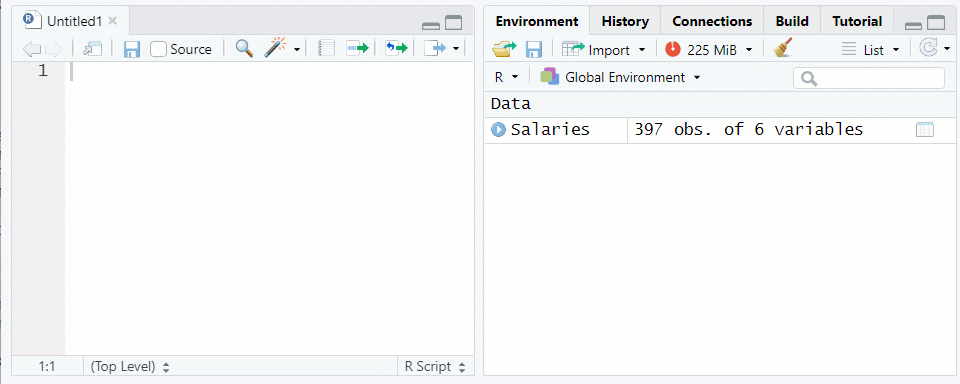
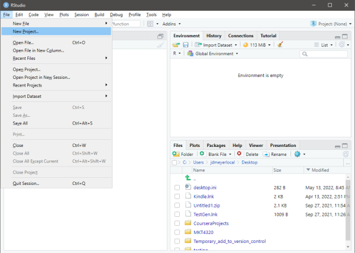
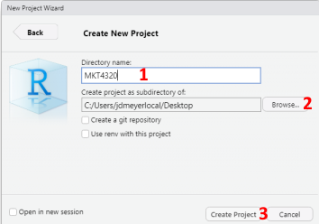
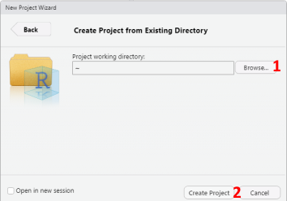
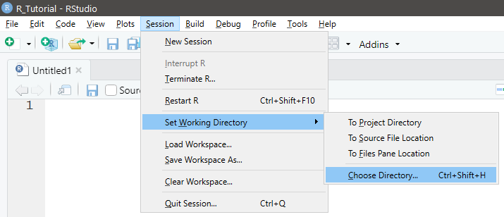
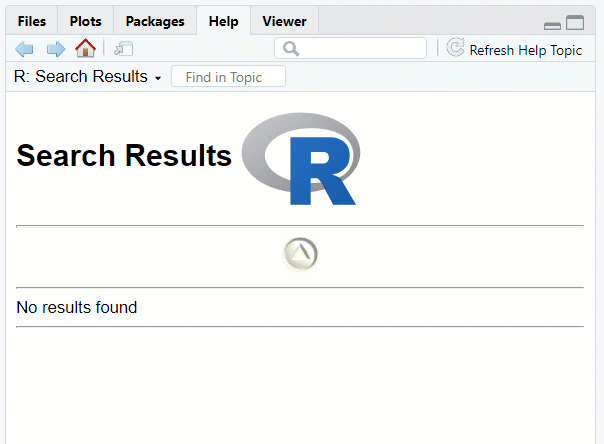
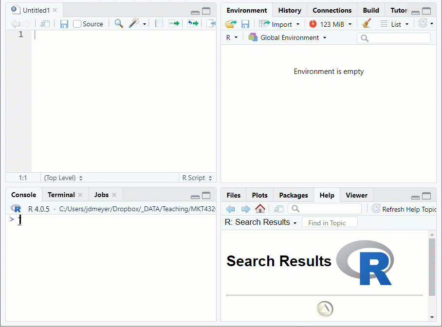
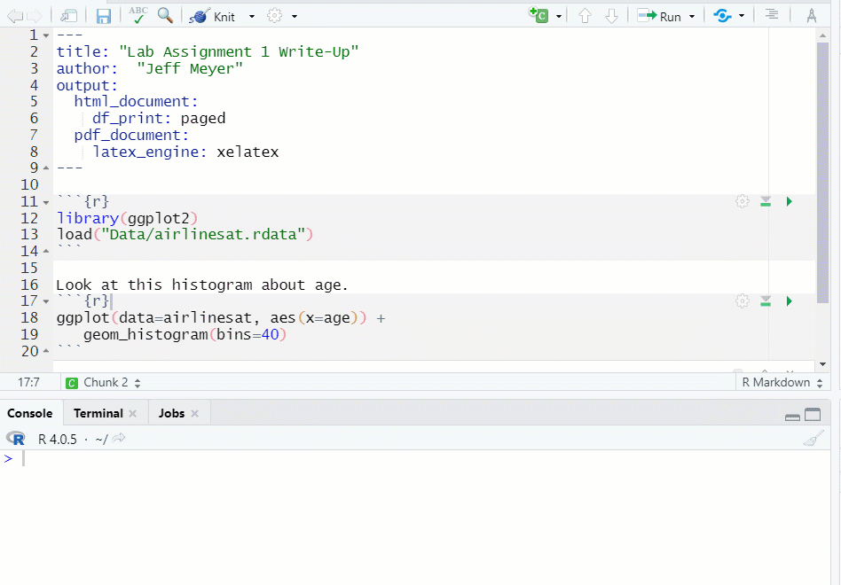
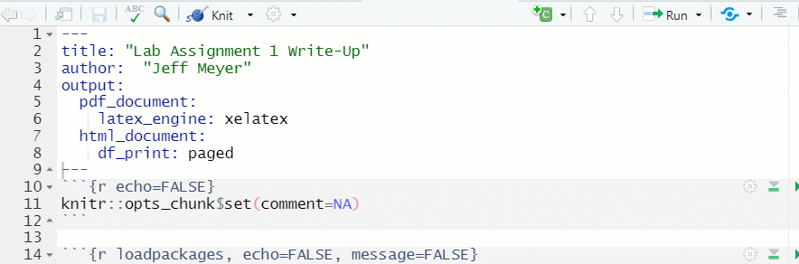

Chapter 1 R Basics
Sources for this chapter:
- R for Marketing Research ad Analytics, Second Edition (2019). Chris Chapman and Elea McDonnell Feit
1.1 Introduction
1.1.1 What is R?
- R is a programming language
- R is not a statistics program
- Much different than SPSS, MiniTab, Stata, etc.
- Does not use a point-and-click interface
1.1.2 Why R?
- Emerging techniques usually available in R quickly
- Default educational platform for statistics programs (and spreading to other disciplines)
- Large and diverse set of analytic tools
- Powerful plotting options
- Large community of helpful users
- R skills are in high demand
And
- R is free
1.1.4 What is RStudio?
- RStudio IDE is an integrated development environment that makes working with R more user friendly
- Not required to use R, but provides a better interface and environment of writing code, editing code, and creating documents.
- Complete separate software
And
- RStudio is free
1.2 R Language
1.2.1 Basics of R Commands
- R is case sensitive
- When using the console, use the keyboard ↑ and ↓ arrow keys to easily cycle through previous commands typed.
- When using the text editor (i.e., a script file) in the source pane, use the
Ctrl+Enterkeyboard shortcut to submit a line of code directly to the console.- The entire line does not need to be highlighted; the cursor needs to be anywhere on the line to be submitted.
- When using the text editor/script file, the “#” symbol signifies a comment
- Everything after is ignored
- It can be on the same line:
x <- 100 # Assign 100 to x- It can be on separate lines:
# Assign 100 to x x <- 100
1.2.2 Operators
Mathematical and logical operators are used frequently.| Description | Operator |
|---|---|
| Mathematical | |
| addition | \(+\) |
| subtraction | \(-\) |
| multiplication | \(*\) |
| division | \(/\) |
| exponentiation | ^ or \(**\) |
| Logical | |
| less than | < |
| less than or equal to | <= |
| greater than | > |
| greater than or equal to | >= |
| exactly equal to | == |
| not equal to | != |
| Not x | !x |
| x OR y | x|y |
| x AND y | x&y |
| test if X is TRUE | isTRUE(x) |
1.3 Packages
Packages are collections of functions that have been written to expand the functionality of R. Packages are not automatically included, and if a command is given that is not part of a package installed and loaded, R will give an error message. Therefore, the package must first be installed, and then loaded.
1.3.1 Installing Packages
Installing packages is performed with the
install.packages("")function, where the name of the package is inside the quotation marksTwo packages that used quite often in this course are
ggplot2anddplyrinstall.packages("ggplot2") install.packages("dplyr")NOTE 1: Packages only need to be installed on your machine once
NOTE 2: If using BGSU’s Virtual Computing Lab, new packages cannot be installed, but the version in the virtual environment has most of the most common packages pre-installed
1.3.2 Loading Packages
Once a package is installed, it has to be loaded with the
library()function, where the name of the package is in the parentheses, in order to be usedlibrary(ggplot2) library(dplyr)NOTE 1: It is not uncommon to see a variety of messages when loading a package
NOTE 2: Packages need to be loaded every time you start a new R session
1.4 Getting Help
R has built in help to assist with understanding different functions
To access the help, type
? FUNCTIONin the console, and the help page for that function will show up in the lower-right pane under the help tab? mean
1.5 Basic Object Types (and Other Important Stuff)
Objects in R include variables, data sets, and functions
The assignment operator
<-assigns a value to a named objectx <- 100 # Assign value 100 to object 'x' x # Display object 'x'[1] 100NOTE: In RStudio console or script file,
Alt+-will automatically paste the assignment operatorAs stated before, object names are case sensitive
x <- 100 # Assign value 100 to object 'x' X # Display object 'X'Error in eval(expr, envir, enclos): object 'X' not foundThe
printcommand can also be used to print objectsprint(x)[1] 100
Video Tutorial: Assignment Operator
1.5.1 Vectors
Vectors can be created many ways and take many data types
One method is to using the
c()function, which concatenates individual itemsx.Num <- c(1, 3.14, 5.49, 10, 20) x.Num[1] 1.00 3.14 5.49 10.00 20.00x.Log <- c(TRUE, FALSE, TRUE, TRUE, FALSE) x.Log[1] TRUE FALSE TRUE TRUE FALSEx.Char <- c("fr", "fr", "jr", "so", "sr") x.Char[1] "fr" "fr" "jr" "so" "sr"The class of the vector can be checked with the
class()function# Concatenate class functions and print together print(c(class(x.Num), class(x.Log), class(x.Char)))[1] "numeric" "logical" "character"
Video Tutorial: Vectors - Part 1
Vectors can only hold a single class/type of value
- When multiple classes are included, the values are coerced to the most general type
x.Mix <- c(1, FALSE, 3.5, "Hello!") x.Mix[1] "1" "FALSE" "3.5" "Hello!"class(x.Mix)[1] "character"The
c()function can be used to add to existing vectors, or combine vectors- Type coercion will be applied as needed
x2 <- c(x.Num, 25, 50) x.Num[1] 1.00 3.14 5.49 10.00 20.00x2[1] 1.00 3.14 5.49 10.00 20.00 25.00 50.00x3 <- c(x2, "Hello") x3[1] "1" "3.14" "5.49" "10" "20" "25" "50" "Hello"Math can be applied directly to vectors
x.Num[1] 1.00 3.14 5.49 10.00 20.00x.Num + 100[1] 101.00 103.14 105.49 110.00 120.00x.Num * pi[1] 3.141593 9.864601 17.247344 31.415927 62.831853The
length()function provides the length of a vectorlength(x.Num)[1] 5length(x.Char)[1] 5The
str()function provide the structure of an object- Class, Length, and Value
str(x.Num)num [1:5] 1 3.14 5.49 10 20str(x.Char)chr [1:5] "fr" "fr" "jr" "so" "sr"
1.5.2 Indexing
Indexing is used to obtain particular elements of a data structure
Vectors are indexed with square brackets,
[]# Obtain the third element of the 'x.Num' vector x.Num[3][1] 5.49Items can be excluded with negative indexing
# Obtain all elements except the third element of the 'x.Num' vector x.Num[-3][1] 1.00 3.14 10.00 20.00Indexing also works with logical operators
# Obtain all elements in 'x.Num' greater than 5 x.Num[x.Num > 5][1] 5.49 10.00 20.00
1.5.3 Sequencing
Vectors can also be created using sequencing
Integer sequencing is done with
#:#codingx.Seq <- 1:10 x.Seq[1] 1 2 3 4 5 6 7 8 9 10Sequences can also be used in indexing
# Obtain the second through fourth element of the 'x.Num' vector x.Num[2:4][1] 3.14 5.49 10.00Complex sequencing can be done using the
seq()functionx.Seq2 <- seq(from=0, to=100, by=20) x.Seq2[1] 0 20 40 60 80 100Note: the
from=,to=andby=can be excludedx.Seq3 <- seq(0,100,20) x.Seq3[1] 0 20 40 60 80 100
1.5.4 Missing (and Other Interesting) Values
In R, missing values are assigned a special constant, NA
NA is not a character value, but a type of its own
Any math performed on a value of NA becomes NA
x.Scores <- c(85, 93, NA, NA) mean(x.Scores)[1] NAMany commands contain a option,
na.rm=TRUE, to ignore NA data when performing the functionmean(x.Scores, na.rm=TRUE)[1] 89NA values can also be removed before performing the function using the
na.omit()functionmean(na.omit(x.Scores))[1] 89R also has special types for infinity, Inf, and undefined numbers (i.e., “not a number”), NaN
- To see this in action, take the natural log,
log(), of certain numbers
log(-1)Warning in log(-1): NaNs produced[1] NaNlog(0)[1] -InfNotice that R provides a warning when the NaN is found
- To see this in action, take the natural log,
1.5.5 Factors
Character data can be converted into nominal factors using the
as.factors()functionEach unique character value will be a level of the factor
- Behind the scenes, R stores the values as integers, with a separate list of labels
When the data type is set as a factor, R knows how to handle it appropriately in the model
The levels can be accessed with the
levels()functionx.Class <- as.factor(x.Char) str(x.Class)Factor w/ 4 levels "fr","jr","so",..: 1 1 2 3 4levels(x.Class)[1] "fr" "jr" "so" "sr"
1.6 Data Frames
Data frames are an object type that deserve special attention
1.6.1 Overview
- Most common way to handle data sets in R
- Provide data to statistical functions
- Think of it like a spreadsheet, or a rectangular object where:
- Columns are varying data types (i.e., variables)
- Rows are values in each column (i.e, observations)
1.6.2 Creating a data frame
Can construct a data frame with the
data.frame()function- Takes as input a set of vectors of the same length
x.df <- data.frame(x.Num, x.Log, x.Char) x.dfx.Num x.Log x.Char 1 1.00 TRUE fr 2 3.14 FALSE fr 3 5.49 TRUE jr 4 10.00 TRUE so 5 20.00 FALSE sr- Note that the column names are inherited from the contributing vector
Elements can be indexed using
[ROW, COLUMN]notation# Obtain the first element of the third row of data frame 'x.df' x.df[3,1][1] 5.49# Obtain the third element of the second row of data frame 'x.df' x.df[2,3][1] "fr"
Video Tutorial: Data Frames (Part 1)
1.6.2.1 Using vectors in-line
The vectors can be created in line (i.e., not already created)
If the vectors are of different length, the shorter vector will be repeated IF the longest vector is divisible by the vector
If a single value is provided instead of a vector, it is repeated for all rows
x2.df <- data.frame(var1=seq(10,100,10), var2=c("Yes","No"), var3=1:5, var4=100) x2.dfvar1 var2 var3 var4 1 10 Yes 1 100 2 20 No 2 100 3 30 Yes 3 100 4 40 No 4 100 5 50 Yes 5 100 6 60 No 1 100 7 70 Yes 2 100 8 80 No 3 100 9 90 Yes 4 100 10 100 No 5 100
1.6.3 Viewing a Data Frame
There are a few ways to view a data frame
Type the data frame name in the console
x.dfx.Num x.Log x.Char 1 1.00 TRUE fr 2 3.14 FALSE fr 3 5.49 TRUE jr 4 10.00 TRUE so 5 20.00 FALSE sr- With data frames that have many variables, this is cumbersome
- With data frames with many rows, a “max.print” setting will kick in and not all rows will be shown
To view only a few rows of data, the
head(DF, n)function can be used, where DF is the name of the data frame, and n (optional) is the number of rows to view, with 10 as the default
NOTE: The “Salaries” data frame from thecarpackage is being used as an examplehead(Salaries,5)rank discipline yrs.since.phd yrs.service sex salary 1 Prof B 19 18 Male 139750 2 Prof B 20 16 Male 173200 3 AsstProf B 4 3 Male 79750 4 Prof B 45 39 Male 115000 5 Prof B 40 41 Male 141500Use the function
View()or click on the data frame name in the environment tab to see the data farme in the Source pane See Figure 1.2Figure 1.2: Viewing a Data Frame in the Source Window
1.6.4 Indexing and Sequencing
Indices can be left blank, which selects all of that dimension
x.df[2, ] # Obtain all of row 2x.Num x.Log x.Char 2 3.14 FALSE frx.df[ ,3] # Obtain all of column 3[1] "fr" "fr" "jr" "so" "sr"As with vectors, indexing can be done with sequencing and negative indices to omit rows
x.df[2:3, ] # Obtain rows 2 and 3x.Num x.Log x.Char 2 3.14 FALSE fr 3 5.49 TRUE jrx.df[ ,-2] # Exclude column 2x.Num x.Char 1 1.00 fr 2 3.14 fr 3 5.49 jr 4 10.00 so 5 20.00 srIndexing a data frame returns an object, but the object type depends on the indexing
- Choosing \(n\) rows and and a single column yields a vector of length \(n\)
- Choosing multiple columns returns a new data frame
- Use the
str()function to verify the new objects structure
str(x.df[1, 1]) # 1 row and 1 column = vector of length 1num 1str(x.df[1:3, 2]) # 3 rows and 1 column = vector of length 3logi [1:3] TRUE FALSE TRUEstr(x.df[1, 1:2]) # 1 row and 2 columns = 1 x 2 data frame'data.frame': 1 obs. of 2 variables: $ x.Num: num 1 $ x.Log: logi TRUEstr(x.df[1:4, c(1, 3)]) #4 rows and 2 columns = 4 x 2 data frame'data.frame': 4 obs. of 2 variables: $ x.Num : num 1 3.14 5.49 10 $ x.Char: chr "fr" "fr" "jr" "so"Data frames can also be indexed using column names after the
$characterx.df$x.Char[1] "fr" "fr" "jr" "so" "sr"
1.7 Data Transformations
- Analysts and researchers often need to create new variables from existing ones or transform existing variables
- Data transformations can usually be accomplished in more than one way
- Using base R will be shown first
- After the
dplyrpackage is introduced, a second way will be shown
- For the transformations shown below, either a new variable will be added to the data frame, or an existing variable will be changed
- However, it is not always required that the data frame be changed
- Sometimes, a transformation will be done ‘on the fly’ and used only in an analysis, but the data frame remains the same
- However, it is not always required that the data frame be changed
1.7.1 Creating New Variables
- Adding a new variable is done using code such as
df$new <- SOME FUNCTION, where:dfis the name of the data framenewis the name for the new variableSOME FUNCTIONis the data transformation to take place
# Create new variable 'NumSq' that is the square of current variable x.Num x.df$NumSq <- x.df$x.Num^2 x.dfx.Num x.Log x.Char NumSq 1 1.00 TRUE fr 1.0000 2 3.14 FALSE fr 9.8596 3 5.49 TRUE jr 30.1401 4 10.00 TRUE so 100.0000 5 20.00 FALSE sr 400.0000
1.7.2 Recoding (Create New)
In base R, recoding is usually a multi-step process using indexing
# Recode 'x.Num' into three factors x.df$Grp <- "low" # Create new variable and set all rows to one level x.df$Grp[x.df$x.Num>=3 & x.df$x.Num<10] <- "med" # Create medium level x.df$Grp[x.df$x.Num>10] <- "high" # Create high level x.df$Grp <- as.factor(x.df$Grp) # Set new variable as factor str(x.df) # See structure of data frame with new variable'data.frame': 5 obs. of 5 variables: $ x.Num : num 1 3.14 5.49 10 20 $ x.Log : logi TRUE FALSE TRUE TRUE FALSE $ x.Char: chr "fr" "fr" "jr" "so" ... $ NumSq : num 1 9.86 30.14 100 400 $ Grp : Factor w/ 3 levels "high","low","med": 2 3 3 2 1Notice the
&in the code above. It stands for “and”, which tells R that both conditions must be true
Video Tutorial: Data Transformations (Recoding New Variables) Video Tutorial: Data Transformations (Factor Variables)
1.7.3 Recoding (Change Existing)
- Recoding to change an existing variable is done in a similar manner
- NOTE: Sometimes we have to first change the variable type, such as when the existing variable is a factor
# Recode 'Grp' into only two factors # Change type to 'character' x.df$Grp <- as.character(x.df$Grp) # Recode 'low' and 'med' to 'very low' x.df$Grp[x.df$Grp=="low" | x.df$Grp=="med"] <- "very low" # Change back to factor x.df$Grp <- as.factor(x.df$Grp) str(x.df)
Notice the'data.frame': 5 obs. of 5 variables: $ x.Num : num 1 3.14 5.49 10 20 $ x.Log : logi TRUE FALSE TRUE TRUE FALSE $ x.Char: chr "fr" "fr" "jr" "so" ... $ NumSq : num 1 9.86 30.14 100 400 $ Grp : Factor w/ 2 levels "high","very low": 2 2 2 2 1|in the code above. It stands for “or”, which tells R that either condition can be true.
Video Tutorial: Data Transformations (Recoding Existing Variables)
1.8 R Projects
The best way to manage all of the downloads and assignments for this course is to create an R Project. Follow the following steps to create a new R Project.
- From within RStudio, select File→New Project…
See Figure 1.3
If a Save Current Workspace window pops up, select Don’t SaveFigure 1.3: Starting a New R Project
- To create the project in a new directory, select New Directory in the New Project Wizard window, then select New Project. Next, type in the name of the directory in the Directory Name: box (See 1 in Figure 1.4). Next, use the Browse button to select the location of the new directory (See 2 in Figure 1.4). Finally, click on Create Project to create the project (See 3 in Figure 1.4).

Figure 1.4: Creating New R Project in New Directory
- To create the project in an existing directory, select Existing Directory in the New Project Wizard window. Next, use the Browse button to select the location of the existing directory (See 1 in Figure 1.5). Finally, click on Create Project to create the project (See 2 in Figure 1.5).

Figure 1.5: Creating New R Project in Existing Directory
Figure 1.6: Opening an R Project
1.9 Loading and Saving Data
In this class, the data will be provided to you as an .Rdata file, which are specific to R and the best way to store (and load) objects. If desired, .Rdata files can contain multiple objects. For example, an .Rdata file could contain two different data frames.
1.9.1 Setting Working Directory
To know where your files are saved to, and to make it easier to load files, it is best to use the R Project discussed above. However, you can also just place all of your files for the course in the same working directory.
Use the
getwd()function to see your current working directorygetwd()[1] "C:/Users/jdmeyer/Docs/RFiles"Set the working directory in one of three ways:
- Use the
setwd()function:
setwd("C:/Users/jdmeyer/Doc/RFiles/RTutorial")
NOTE: Forward slashes (as shown above) are used in place of backward slashes for directory paths - Use the menus in RStudio
Session→Set Working Directory→Choose Directory
See Figure 1.7Figure 1.7: Set Working Direcory using Menus
- Use the
Filestab in the lower-right corner in RStudio
See Figure 1.8Figure 1.8: Set Working Direcory using Files Tab
- Use the
1.9.2 Loading .Rdata
- Use the
load("FILE LOCATION/NAME")function to load and.Rdatafile- Suppose the data set used in Topic 1 (airlinesat.rdata) is in a subdirectory of the working directory called Data
See 1.9 for a visual exampleload("Data/airlinesat.rdata")Figure 1.9: Loading Data
1.10 User Defined Functions
Often, a series of commands is repeated over and over, or there is not an easy, built-in function in R to provide a needed result. In these case, R makes it relatively easy to create your own functions
1.10.1 Structure
- A function is constructed in the in the following manner:
function.name <- function(arglist) {body}wherefunction.nameis the name of the user defined function(arglist)contains the names of any inputs to the function, separated by commas{body}contains the code that operates on the inputs
- The function must be executed prior to using it in the current session; alternatively, the function can be saved as a “.R” script file and sourced using the
source()function in R
1.10.2 Example
Suppose a function is need to take the square root of a natural log transformation
The new function will be named
sqlogand will have one argument# Define the new function sqlog <- function(x) { # Function has one argument, 'x' sqrt(log(x)) # What is done with the argument, 'x' }Now that the function is created and ran, it can be used. In this case, the output will be printed to the console. The function could have been written in a way that the result is stored as an object.
sqlog(100) # Using the function on a single number[1] 2.145966myvals <- c(5, 10, 20, 40, 80, 160) # Creating a vector of values sqlog(myvals) # Using the function on a vector[1] 1.268636 1.517427 1.730818 1.920646 2.093329 2.252815
1.11 Package dplyr
The dplyr package (pronounced DEE ply er) is a package that makes data manipulation much easier and more intuitive (for most). dplyr is built around the five main “verbs” shown below that make up a majority of data manipulation. However, there are other functions that dplyr uses to also help with data manipulation.
selectis used to subset columnsfilteris used to subset rowsarrangeis used to sort rowsmutateis used to add new columns based on calculations (usually with other columns)summariseis use to perform summary calculations (e.g., mean, max, etc.) on data set
In addition, dplyr uses the pipe, %>%, to string together a series of functions. Think of functions strung together as upstream and downstream functions. The function to the left of %>% is the upstream function, while the function to the right is the downstream function.
- By default, the downstream function assumes the value coming from the upstream function is the first argument in its function
- Therefore, the first argument can be omitted
- If the downstream function needs to use the value from from the upstream function assigned to a different argument, a
.is simply put in the position of that argument
1.11.1 dplyr Examples
First, be sure the dplyr package is loaded:
library(dplyr)We’ll be using the airlinesat dataset from the airlinesat.rdata file for these examples.
Video Tutorial: dplyr (Introduction)
1.11.1.1 select() function
- Usage:
select(.data, ...), where...is one or more unquoted expressions separated by commas airlinesathas 70 variables, but 46 of them are a series of expectation (e1 to e23) and satisfaction (s1 to s23)scales.- First, we want to create a new data frame with those variables excluded.
- For simplicity, the
num_range("prefix", start:finish)selection can be used, and the!takes the complement (i.e., all but these)
- For simplicity, the
airlinesat.small <- # Create new data frame airlinesat %>% # Use airlinesat as the starting data frame select(!num_range("e", 1:23)) %>% # Select all but e1 to e23 select(!num_range("s", 1:23)) # Select all but s1 to s23 # NOTE: the two selects could have been concantendated as: # select(!c(num_range("e", 1:23), num_range("s", 1:23))) str(airlinesat.small)'data.frame': 1065 obs. of 24 variables: $ age : num 30 55 56 43 44 40 39 41 33 51 ... $ country : Factor w/ 5 levels "at","ch","de",..: 2 2 2 4 2 2 2 2 2 3 ... $ flight_class : Factor w/ 3 levels "Business","Economy",..: 2 1 2 2 1 3 2 1 2 1 ... $ flight_latest : Factor w/ 6 levels "within the last 12 months",..: 4 3 5 3 6 5 6 3 3 4 ... $ flight_purpose: Factor w/ 2 levels "Business","Leisure": 2 1 1 2 1 2 1 1 2 1 ... $ flight_type : Factor w/ 2 levels "Domestic","International": 1 2 1 1 2 2 1 2 1 2 ... $ gender : Factor w/ 2 levels "female","male": 2 2 1 1 1 2 2 2 2 2 ... $ language : Factor w/ 3 levels "English","French",..: 2 1 1 2 1 3 2 2 2 3 ... $ nflights : num 2 6 8 7 25 16 35 9 3 4 ... $ status : Factor w/ 3 levels "Blue","Gold",..: 1 2 1 1 2 2 1 2 1 2 ... $ nps : num 6 10 8 8 6 7 8 7 8 8 ... $ sat1 : num 5 6 4 6 4 7 6 5 4 4 ... $ sat2 : num 2 6 2 6 3 2 3 3 4 4 ... $ sat3 : num 4 6 2 4 2 7 5 4 4 3 ... $ loy1 : num 3 6 3 6 3 2 2 4 4 3 ... $ loy2 : num 3 6 4 4 3 3 7 4 4 4 ... $ loy3 : num 3 6 7 5 2 2 7 4 2 3 ... $ loy4 : num 7 5 2 4 2 3 7 5 1 3 ... $ loy5 : num 3 6 4 5 2 2 6 5 2 4 ... $ com1 : num 1 6 7 6 3 7 7 4 3 1 ... $ com2 : num 1 6 7 6 3 6 7 4 3 7 ... $ com3 : num 7 6 7 6 2 3 7 5 3 7 ... $ overall_sat : num 2 6 2 4 2 4 4 4 4 3 ... $ reputation : num 3 6 4 6 5 3 3 4 2 4 ...- Second, we want to create a new data frame with only demographic variables
airlinesat.d <- # Create new data frame airlinesat %>% # Use airlinesat as the starting data frame select(age, country, gender) # Select only demographic variables str(airlinesat.d)'data.frame': 1065 obs. of 3 variables: $ age : num 30 55 56 43 44 40 39 41 33 51 ... $ country: Factor w/ 5 levels "at","ch","de",..: 2 2 2 4 2 2 2 2 2 3 ... $ gender : Factor w/ 2 levels "female","male": 2 2 1 1 1 2 2 2 2 2 ...- First, we want to create a new data frame with those variables excluded.
1.11.1.2 filter() function
Usage:
filter(.data, ...), where...is an expression that returns a logical valueFirst, we want to select only those rows where the person is from the United States (i.e.,
country == "us") using the newly createdairlinesat.ddata frameairlinesat.dus <- airlinesat.d %>% filter(country == "us") head(airlinesat.dus)age country gender 1 52 us male 2 68 us male 3 64 us female 4 47 us male 5 57 us male 6 43 us maleSecond, we want to select only those rows where the person is older than the mean age using the newly created
airlinesat.ddata frameairlinesat.dold <- airlinesat.d %>% filter(age > mean(age, na.rm=TRUE)) head(airlinesat.dold)age country gender 1 55 ch male 2 56 ch female 3 51 de male 4 58 de female 5 53 de male 6 53 de male
1.11.1.3 arrange() function
Usage:
arrange(.data, ..., .by_group = FALSE)where...are variable(s) or functions of variables- Use
desc(...)to sort in a descending order .by_group = TRUEwill sort first by a grouping variable, if one exists; default isFALSE
- Use
First, we want to see the first 10 rows in ascending order of age using the
airlinesat.ddata frame# NOTE: A new data frame does not need to be created. # The result of the data manipulation can be sent directly # to another function, like 'head()' airlinesat.d %>% arrange(age) %>% head(10)age country gender 1 19 de male 2 19 de male 3 21 de male 4 21 de male 5 22 de female 6 22 de male 7 22 de male 8 22 de female 9 22 de male 10 23 de maleSecond, we want to see the first 10 rows of three variables (age, country, nflights) from the original
airlinesatdata frame, sorted first ascending by age and second descending by nflightsairlinesat %>% select(age, country, nflights) %>% arrange(age, desc(nflights)) %>% head(10)age country nflights 1 19 de 15 2 19 de 3 3 21 de 11 4 21 de 2 5 22 de 20 6 22 de 8 7 22 de 3 8 22 de 3 9 22 de 2 10 23 de 15
1.11.1.4 mutate() function
Usage:
mutate(.data, ...)where...are name-value pairs. The name gives the name of the new column/variable. The value is some function or formula.First, we want to create a standard normal variable for age using the airlinesat.d data frame
airlinesat.d %>% mutate(age_snrm=(age-mean(age, na.rm=TRUE))/sd(age,na.rm=TRUE)) %>% head(10)age country gender age_snrm 1 30 ch male -1.66357002 2 55 ch male 0.37315007 3 56 ch female 0.45461887 4 43 fr female -0.60447557 5 44 ch female -0.52300677 6 40 ch male -0.84888198 7 39 ch male -0.93035079 8 41 ch male -0.76741318 9 33 ch male -1.41916361 10 51 de male 0.04727486Second, we want to use
mutatewithrecodeto create a new variable, continent based on variable countryrecode(.x, ...)where.xis the variable to modify and...are the things to recode inold = "new"format separated by commas- Use
recode_factor(.x, ...)to recode factor variables
airlinesat.d %>% mutate(continent=recode_factor(country, at="Europe", ch="Europe", de="Europe", fr="Europe", us="North America")) %>% head(10)age country gender continent 1 30 ch male Europe 2 55 ch male Europe 3 56 ch female Europe 4 43 fr female Europe 5 44 ch female Europe 6 40 ch male Europe 7 39 ch male Europe 8 41 ch male Europe 9 33 ch male Europe 10 51 de male Europe
1.11.1.5 summarise() function
Usage:
summarise(.data, ...)where...are name-value pairs of summary functions (e.g.,mean(),min(),sum(),n())- More than one summary function can be included
First, we want to find the mean, standard deviation, and number of valid observations for the nflights variable
airlinesat %>% summarise(mean_flights=mean(nflights, na.rm=TRUE), sd_flights=mean(nflights, na.rm=TRUE), valid_n=sum(!is.na(nflights)))mean_flights sd_flights valid_n 1 13.41878 13.41878 1065Second, we want to find the same information as above, but by continent group
- Use the
group_by()function beforesummarise()
# NOTE: The output will be of type 'tibble' instead of 'data.frame' # Tibbles are like data frames, but occasionally behave differently airlinesat %>% mutate(continent=recode_factor(country, at="Europe", ch="Europe", de="Europe", fr="Europe", us="North America")) %>% group_by(continent) %>% summarise(mean_flights=mean(nflights, na.rm=TRUE), sd_flights=mean(nflights, na.rm=TRUE), valid_n=sum(!is.na(nflights)))# A tibble: 2 × 4 continent mean_flights sd_flights valid_n <fct> <dbl> <dbl> <int> 1 Europe 13.7 13.7 870 2 North America 12.2 12.2 195- Use the
1.12 Package lubridate
The lubridate package was created to make working with dates and times a little bit easier. While the package has a great deal of funcationality, this tutorial will only focus on a some of the most common elements.
Probably the most useful capability of lubridate is its ability to quickly parse out parts of a text date string, no matter the form of that string. Fast parsing is done through a series of functions that are based on the order of the parts of date/time in the text string.
- Use
ymd()if the order is year, month, day, such as “20101215” or “16/7/1” - Use
mdy()if the order is month, day, year, such as “January 25, 2016” or “5/29/1993” - Use
dmy()if the order is day, month, year, such as “171210” or “5 January 1990”
The results will be the in the format “YYYY-MM-DD” and have a ‘Date’ class
library(lubridate)
ymd(c("20101215", "16/7/1"))[1] "2010-12-15" "2016-07-01"mdy(c("January 25, 2016", "5/29/1993"))[1] "2016-01-25" "1993-05-29"dmy(c("171210", "5 January 1990"))[1] "2010-12-17" "1990-01-05"If time is also included in the text string, that can also be parsed out, such as ymd_hms() where hms stands for hours, minutes, seconds
Additionally, lubridate can easily pull out the specific components that are have class ‘Date’
year(x)returns the year numbermonth(x)returns the number of the monthmonth(x, label=TRUE)returns the month name (abbreviated)day(x)(ormday(x)) returns the number of the day of the monthwday(x)returns the number of the day in week, where Sunday = 1wday(x, label=TRUE)returns the day of the week name (abbreviated)yday(x)returns the number of the day of the year# Use lubridate to create a date class object for my birthday (not really) mybday <- mdy("March 15, 1973") year(mybday)[1] 1973month(mybday)[1] 3month(mybday, label=TRUE)[1] Mar 12 Levels: Jan < Feb < Mar < Apr < May < Jun < Jul < Aug < Sep < ... < Decday(mybday)[1] 15wday(mybday)[1] 5wday(mybday, label=TRUE)[1] Thu Levels: Sun < Mon < Tue < Wed < Thu < Fri < Satyday(mybday)[1] 74
1.13 R Markdown and R Notebook
R Markdown allows users to create documents that combine code and text. Ultimately, they are used for “reproducible research”. That is, the R Markdown files allow other people to see exactly what was done, and if the data is available to all, other people can reproduce the research.
In this class, R Notebooks, which use R Markdown, will be used for the lab assignments. You will write your code in the R Notebook file, and answer the assignment questions with the code your have written.
While R Markdown has a great deal of functionality, we will focus on a select few of those features. This cheatsheet may be beneficial.
1.13.1 YAML Header
The top of every R Markdown is a section called the YAML header, which is enclosed at the top and bottom with ---. For this class, the only thing in the YAML header that you will need to change is the author: section.
Figure 1.10: Change Author in YAML Header
1.13.2 Markdown Syntax
When writing text in R Markdown, there isn’t a “point and click” menu to change fonts size or to add italics or bold text or to insert an equation. Instead, it requires the use of “markdown” syntax. The most commonly used are provided below:
Plain textPlain text
*Italic*Italic
**Bold**Bold
***Bold and Italic***Bold and Italic
# Header 1Header 1
## Header 2Header 2
### Header 3Header 3
#### Header 4Header 4
* Unordered list item
* Item 2
* Item 2a (indent 4 spaces)
* Item 2b- Unordered list item
- Item 2
- Item 2a (indent 4 spaces)
- Item 2b
1. Ordered list item
2. Item 2
1. Item 2a (indent 4 spaces)
2. Item 2b- Ordered list item
- Item 2
- Item 2a (indent 4 spaces)
- Item 2b
`verbatim code`vertabim code
equation: $y=\alpha+\betax$equation: \(y=\alpha+\beta x\)
(See this file for symbols)
1.13.3 Code Chunks
One of the greatest things about R Markdown and R Notebook files is the ability to include code, and run the code, within the file. Putting code in the file is done with code chunks.
1.13.3.1 Inserting a Code Chunk
Code chunks can be inserted by clicking on the “Insert Chunk” button in the document toolbar (see Figure 1.11) or by manually typing in the code chunk (see Figure 1.12)
Figure 1.11: Inserting a Code Chunk from the Toolbar
Figure 1.12: Inserting a Code Chunk Manually
1.13.3.2 Using Code Chunks
- R Markdown and R Notebook don’t pay attention to anything else going on in your R/RStudio session
- Any objects, data, packages, or user defined scripts must be in a code chunk
- However, once they are loaded in a chunk, they do not need to be loaded again in subsequent chunks
- To run a code chunk, click on the green triangle (
- If you run a chunk that does have the necessary object, data, etc., you will get an error message (see Figure 1.13)

Figure 1.13: Chunk Error
- If you need to run previous chunks to load data or packages, click on the gray triangle with the green bar underneath () first, then click on the green triangle (see Figure 1.14)

Figure 1.14: Run Previous Chunks, then Run Chunk
- If you run a chunk that does have the necessary object, data, etc., you will get an error message (see Figure 1.13)
- Once the chunk runs correctly, the result will be shown under the chunk
- To clear the result, click on the ‘x’ in the upper right hand corner of the results
1.13.3.3 “Knitting” the Results
At any time, you can “Knit” the R Notebook file to an HTML document or a PDF document. While working through the document, HTML is usually quicker. When the document is completed, a PDF is more professional looking.
- To “Knit” the file, click on the down arrow next to “Knit” in the document toolbar, and select how you would like to product the document (see Figure 1.15)
- By default, a document knitted to HTML will be viewable in the “Viewer” window in the lower right hand side of RStudio.
- For documents knitted to PDF, RStudio generally opens up a new window with the knitted PDF, from which the file can be saved to a local directory

Figure 1.15: Knit a Document